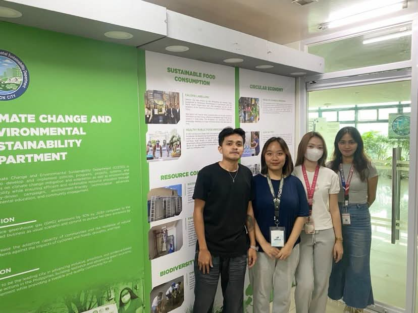

Recycling kiosk
Residents tap an Eco-Card, enter a PIN, and choose a material to start a deposit. The kiosk also shows balances, conversion rates, and available rewards.
Expo · React Native · NFCECO-TAP Solutions · Quezon City University
The Ecological Community Tracking and Award Platform is a BS Information Technology capstone connecting an NFC-enabled kiosk, a resident app, and a staff portal.

The system
Residents tap an Eco-Card, enter a PIN, and choose a material to start a deposit. The kiosk also shows balances, conversion rates, and available rewards.
Expo · React Native · NFCResidents can check points and recycling activity, start a deposit, and redeem rewards from their Android phone.
Expo · React Native · AndroidStaff can monitor collection volume, manage resident accounts and rewards, and record handovers of collected material.
React · Node.js · SupabaseHow it works
ECO-TAP gives residents a record of what they earn and gives staff a shared ledger for collected plastic. The capstone focuses on selected PET and HDPE bottles.
Authenticate with a registered Eco-Card and six-digit PIN.
Select PET or HDPE. In the intended machine workflow, sensors report the material and measured weight to the server.
The server applies the material’s points rate and records the deposit. Residents can use those points to redeem available rewards.
Our team
The ECO-TAP capstone team from Quezon City University’s College of Computer Studies.
ECO-TAP is a prototype. Machine-measured deposits can be demonstrated with the project’s simulator while the physical hardware is being validated.
ECO-TAP for Android
Check your points, see recycling activity, and redeem rewards. The app connects automatically to the ECO-TAP server.
64-bit Android · NFC for card tapping